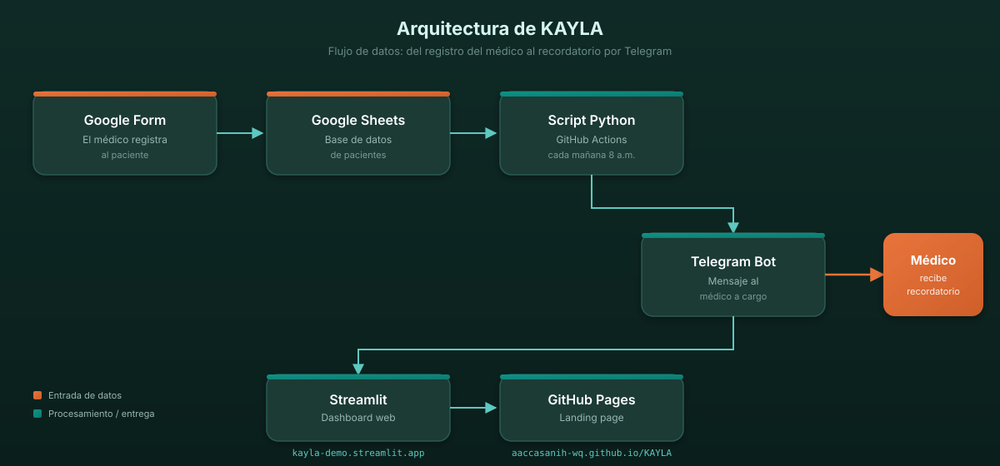

Plataforma de agentes de IA que automatizan recordatorios, reservas y confirmaciones de citas para postas de salud y clínicas privadas, empezando con Telegram y avanzando hacia llamadas de voz con IA.
Estudiante de Economía en la Universidad del Pacífico. Construye KAYLA como solo founder usando agentes de IA como co-founder de ingeniería.
Founder-market fit: hermano es médico de posta del MINSA en Lima. Acceso directo al problema, a los usuarios y a las métricas reales de la Diris.
Médicos y enfermeras de postas de primer nivel del MINSA gestionan pacientes crónicos con Excel y llamadas manuales. Si no cumplen las métricas de la Diris/Diresa, la posta pierde recursos.
— Médico de posta, Lima (hermano del founder, validación de campo)
Fuentes: ENDES 2022 (adherencia terapéutica), MINSA OGE 2017 (prevalencia), VA Consultores 2024 (establecimientos)
No es un problema de "falta de tecnología en salud". Hay muchos sistemas caros. Es un problema de herramientas que no llegan al primer nivel. Las postas no tienen presupuesto, pero sí tienen Google Sheets y Telegram. El sistema debe funcionar con lo que ya usan.
No compite con los HIS del MINSA: cubre el primer nivel que ellos ignoran, con herramientas que el personal ya conoce.
LLMs y agentes como Claude Code permiten construir sistemas completos en días, no meses. Un solo founder puede hacer el trabajo de un equipo.
Mensajería robusta sin costo por mensaje. Hace 3 años requería integración técnica compleja; hoy es un token y 20 líneas de Python.
Las postas ya usan Excel/Sheets. La API de Google permite leer y escribir sin instalar nada. Cero curva de aprendizaje.
Post-pandemia, el MINSA exige mayor control de enfermedades crónicas. Las postas que no cumplen pierden recursos. La urgencia aumentó.
peruanos hipertensos (18.6% de prevalencia). Mercado potencial de usuarios.
Fuente: MINSA OGE 2017
establecimientos de primer nivel en Perú (I-1 a I-4).
Fuente: VA Consultores 2024
postas en 12 meses. Meta realista como solo founder.
1 micro-red Diris
Ingreso potencial (SOM × Pro): 50 postas × S/49/mes = S/2,450 MRR → S/29,400 ARR. Escalable a S/199/mes con plan Micro-red.
| Alternativa | Pros | Contras vs. KAYLA |
|---|---|---|
| Excel + llamadas manuales | Gratis, ya lo conocen | Pierde ~40% de pacientes, consume horas, sin métricas |
| Sistemas HIS del MINSA | Oficial, integrado | No llegan a postas pequeñas, interfaz compleja, requiere capacitación |
| SMS masivo (Infobip, Twilio) | Escalable | Costo por mensaje, requiere integración, no hay seguimiento |
| Apps de citas (Doctoralia) | Para clínicas privadas | Costo alto, no adaptado a salud pública, no maneja recojo de medicamentos |
| KAYLA | Gratis, Sheets + Telegram, dashboard + scheduler | — |
Historial de asistencia por paciente, posta y enfermedad → predicción de abandono
Founder conectado al sector. Red de contactos con médicos del MINSA
No es "envía un mensaje": leer Excel, identificar riesgo, notificar, confirmar, reportar

Landing + pricing
aaccasanih-wq.github.io/KAYLA
Dashboard Streamlit
kayla2026.streamlit.app
Repositorio
github.com/aaccasanih-wq/KAYLA
No vendemos al Estado directamente. Vendemos a profesionales de salud y operadores de micro-redes (médicos, ONG, gestores de varias sedes) que luego presionan hacia arriba. Costo variable por usuario: ~S/0.
Founder + hermano contactan colegas de postas en Lima. Uso gratuito a cambio de feedback. Validación directa del producto con usuarios reales.
Grupos de Facebook de médicos del MINSA, foros de salud pública, WhatsApp groups de médicos. Referrals de los primeros 10 usuarios.
Convenio con ONG de salud (ej. Partners In Health Perú) o municipalidad distrital con fondos de innovación. Primer contrato institucional.
Hermano del founder. Sistema funcionando con pacientes reales.
Médicos esperando prueba del sistema en sus postas.
Conversaciones documentadas con personal de salud sobre el problema.
— Médico de posta, Lima (entrevista de validación, ver docs/research/)
3 postas activas, sistema estable con Telegram, primeros usuarios pagando en plan Pro. Validación de willingness to pay.
10 postas, agentes de voz con IA que llaman directamente a los pacientes, dashboard con predicción de abandono usando datos propios.
50 postas (1 micro-red), expansión a clínicas privadas con agentes de IA de voz para reservas y confirmaciones de citas, plataforma de métricas y reportes, primer convenio institucional (ONG o municipalidad).
Métrica norte: postas activas pagando plan Pro. Meta 12 meses: 50 postas × S/49 = S/2,450 MRR.
Mitigación: no vender al Estado directamente. Vender B2B ligero a profesionales individuales primero. El Estado llega después, empujado por los profesionales.
Mitigación: notificar al médico por Telegram para que llame manualmente. Generar lista de impresión para pacientes sin contacto digital.
Mitigación: agentes de IA (Claude Code) como co-founder de ingeniería. MVP mínimo y enfocado. GitHub Actions y Streamlit Cloud automatizan la operación.
para 3 meses de runway: validar 10 postas pagantes, contratar 1 developer part-time, y conseguir la primera micro-red de la Diris.
Este monto desbloquea product-market fit en salud pública peruana.